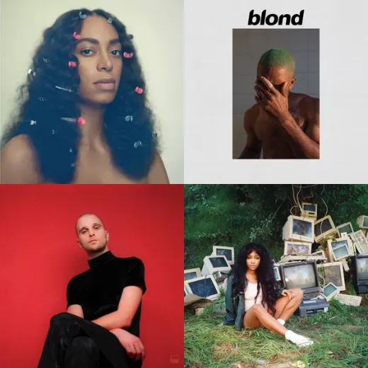

Where soulful vocals meet experiment production

Alternative R&B emerged in the late 2000s and 2010s as artists began blending the emotional core of traditional rhythm and blues with the atmosphere of indie, electronic and experimental music.
Sonically, the genre is defined by its openness: hazy synths, minimal drum programming, sparse arrangements, and a willingness to break from standard song structure.
The genre's influence has stretched far beyond its original scene, shaping the sound of modern pop, hip-hop, and indie music over the past decade.